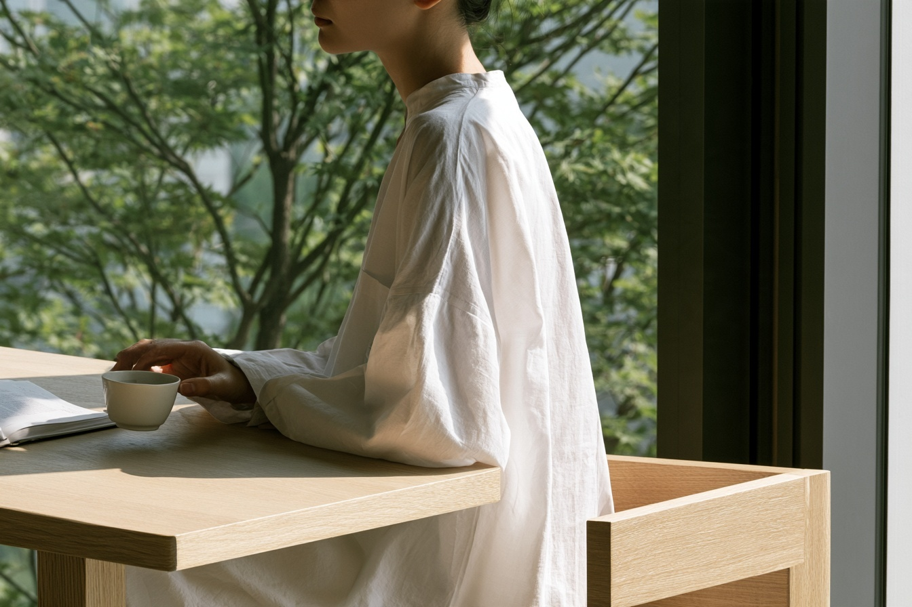
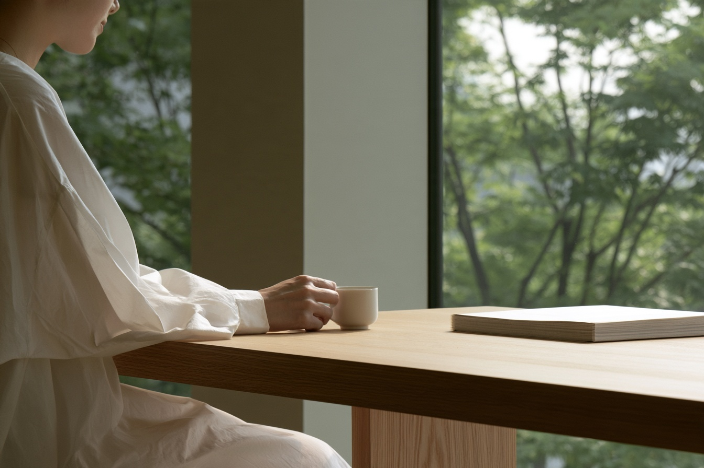

쉼에 계획이 필요한 건 아니에요.
창가로 의자를 옮기는 일, 책을 펼치기 전에 찻잔을 내려놓는 일. 완벽한 순간을 준비하기보다 이미 곁에 있는 시간을 알아차리는 데서 쉼은 시작됩니다.
공간에 조금 덜 채워 보세요.
정돈된 자리와 편안한 빛, 손에 익은 사물 하나면 충분할 때가 있습니다. 공간을 덜 채우면 지금 필요한 것이 더 잘 들립니다. 고요함일 수도, 누군가의 곁일 수도, 잠깐의 여유일 수도 있어요.
이곳에 머무는 일상의 즐거움.

창가로 의자를 옮기는 일, 책을 펼치기 전에 찻잔을 내려놓는 일. 완벽한 순간을 준비하기보다 이미 곁에 있는 시간을 알아차리는 데서 쉼은 시작됩니다.
정돈된 자리와 편안한 빛, 손에 익은 사물 하나면 충분할 때가 있습니다. 공간을 덜 채우면 지금 필요한 것이 더 잘 들립니다. 고요함일 수도, 누군가의 곁일 수도, 잠깐의 여유일 수도 있어요.

손이 무게를 기억하는 찻잔, 편안한 높이의 테이블, 날마다 조금씩 달라지는 풍경. 작은 익숙함이 모이면 방 한쪽도 나만의 자리가 됩니다.
천천히 시간을 보내는 데 특별한 도구는 필요하지 않습니다. 지금의 공간과 좋아하는 차로 시작해 보세요. 휴대전화는 조금 멀리 두고, 물이 가라앉기를 기다려요. 그것으로 충분합니다.